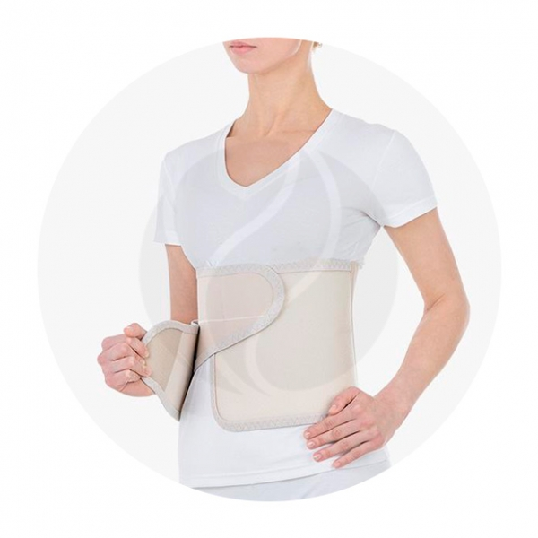
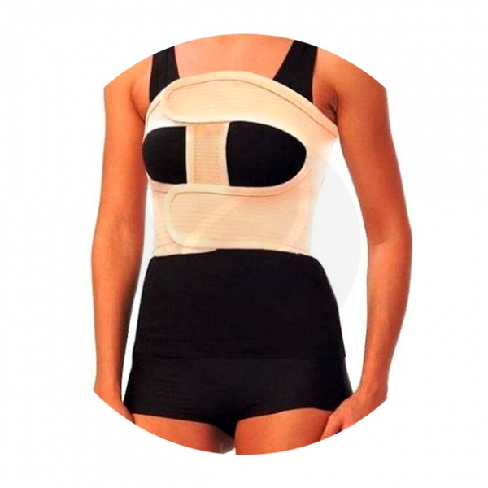
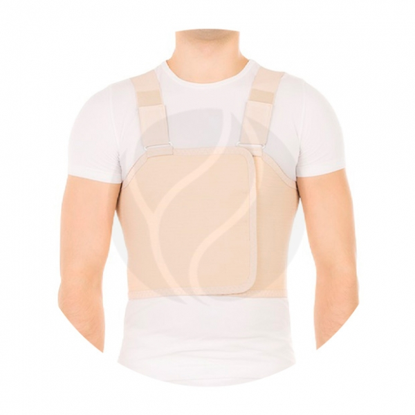

| Названия | Состав | Цена | Внешний вид |
|---|---|---|---|
| 3629 | Полиамид — 54%. Хлопок — 20%. Эластан — 16%. Полиэстер — 10%. | Trives бандаж послеоперационный Т.26.04 (Т-1334) р-р.(M), бежевый |  |
| 2599 | Хлопок — 53% Полиэстер — 31% Эластан — 16% Ребра: пластик | Trives бандаж послеоперационный на грудную клетку (жен.) Т.23.08 (Т-1338) р.M |  |
| 2599 | Хлопок — 53%. Полиэстер — 31%. Эластан — 16%. | Trives бандаж послеоперационный на грудную клетку (муж.) Т.23.09 (Т-1339) р.L |  |